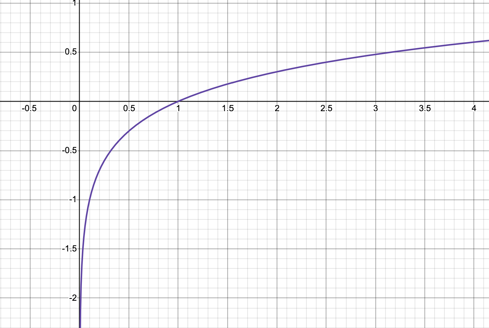

Paper Math: KTO (Kahneman Tversky Optimization)
Background
In this notebook I’ll walk through some of the math involved in the research paper KTO: Model Alignment as Prospect Theoretic Optimization. Here’s the abstract:
Kahneman & Tversky’s prospect theory tells us that humans perceive random variables in a biased but well-defined manner; for example, humans are famously loss-averse. We show that objectives for aligning LLMs with human feedback implicitly incorporate many of these biases – the success of these objectives (e.g., DPO) over cross-entropy minimization can partly be ascribed to them being human-aware loss functions (HALOs). However, the utility functions these methods attribute to humans still differ from those in the prospect theory literature. Using a Kahneman-Tversky model of human utility, we propose a HALO that directly maximizes the utility of generations instead of maximizing the log-likelihood of preferences, as current methods do. We call this approach Kahneman-Tversky Optimization (KTO), and it matches or exceeds the performance of preference-based methods at scales from 1B to 30B. Crucially, KTO does not need preferences – only a binary signal of whether an output is desirable or undesirable for a given input. This makes it far easier to use in the real world, where preference data is scarce and expensive.
The key difference between KTO and other methods (such as RLHF or DPO) is that instead of using preference data, KTO uses a binary signal of desirable or undesirable, as seen in the dataset example on the HuggingFace KTO Trainer page (where True = desired and False = undesired):
kto_dataset_dict = {
"prompt": [
"Hey, hello",
"How are you",
"What is your name?",
"What is your name?",
"Which is the best programming language?",
"Which is the best programming language?",
"Which is the best programming language?",
],
"completion": [
"hi nice to meet you",
"leave me alone",
"I don't have a name",
"My name is Mary",
"Python",
"C++",
"Java",
],
"label": [
True,
False,
False,
True,
True,
False,
False,
],
}In the following sections I walk through some of the math in the paper to get a better understanding of the concepts behind them.
Section 4.1. Derivation
KTO Loss Function: \[\mathcal{L}_{KTO}(\pi_\theta, \pi_{ref}) = \mathbb{E}_{x, y\sim\mathcal{D}}[w(y)(1 - v_{KTO}(x, y;\beta))]\]
Where:
\[w(y) = \begin{cases} \lambda_D & \text{if } y \sim y_{desirable}|x \\ \lambda_U & \text{if } y \sim y_{undesirable}|x \end{cases}\]
\[v_{KTO}(x,y;\beta) = \begin{cases} \sigma(r_{KTO}(x,y) - z_{ref}) & \text{if } y \sim y_{desirable}|x \\ \sigma(z_{ref} -r_{KTO}(x,y)) & \text{if } y \sim y_{undesirable}|x \end{cases}\]
\[z_{ref}= \mathbb{E}_{x'\sim\mathcal{D}}[\beta KL(\pi_\theta(y'|x')||\pi_{ref}(y'|x'))]\]
\[r_{KTO}(x,y)=\beta\log\frac{\pi_\theta(y|x)}{\pi_{ref}(y|x)}\]
KTO Loss for Desirable Outputs
\[\mathcal{L}_{KTO}(\pi_\theta, \pi_{ref}) = \mathbb{E}_{x, y\sim\mathcal{D}}\big[\lambda_D\big(1 - \sigma(r_{KTO} - z_{ref})\big)\big]\]
Here is what \(1-\sigma(x)\) looks like:

As the term \(r_{KTO} - z_{ref}\) increases (i.e. the reward for desirable outputs increases while KL divergence stays the same or decreases), loss decreases. From the paper:
Intuitively, KTO works because if the model increases the reward of a desirable example in a generic way, then the KL penalty will also rise and no progress will be made on the loss.
I think “generic way” has a negative connotation in this statement, meaning that the model is not increasing the reward in the specific way that \(\pi_{ref}\), the supervised fine-tune reference model, was trained to generate outputs in (for whatever the use case is—helpful, honest, harmless, etc.).
From the paper:
We do not back-propagate through the KL term, as it makes training much more stable. This means that the KL term purely serves to control how saturated the loss is. (emphasis mine)
ChatGPT:
When the loss for a deep learning model is described as “saturated,” it typically means that the model has reached a point where further training does not significantly decrease the loss anymore. In other words, the model has learned as much as it can from the available data, and additional training iterations are unlikely to improve its performance significantly.
I think it’s correct to say that \(r_{KTO}\) is like the KL divergence between the policy being trained and the reference policy across all input/output training data pairs, while \(z_{ref}\) is the KL divergence between the policy being trained and the reference policy across all reference data pairs. I think it’s also correct to continue that logic to say that as \(r_{KTO}\) increases, the policy being trained diverges from the reference policy (on training data), and \(z_{ref}\) keeps that divergence in check (if the policy being trained diverges too far from the reference policy on the reference data, the loss increases or stays the same).
KTO Loss for Undesirable Outputs
\[\mathcal{L}_{KTO}(\pi_\theta, \pi_{ref}) = \mathbb{E}_{x, y\sim\mathcal{D}}\big[\lambda_U\big(1 - \sigma(z_{ref} - r_{KTO})\big)\big]\]
This has the same \(1-\sigma(x)\) form. If the reward for an UNdesirable output increases while the KL term \(z_{ref}\) stays the same, the loss will increase.
Understanding \(z_{ref}\)
From the paper:
Rather than having just one dispreferred generation \(y_l|x\) as the reference point, we assume that humans judge the quality of \((x,y)\) in relation to all input-output pairs they have seen.
The phrase “rather than having just one dispreferred generation \(y_l|x\) as the reference point” I think is referring to the DPO loss function, specifically the second term inside log sigmoid:
\[\mathcal{L}_{DPO}(\pi_\theta; \pi_{ref}) = -\mathbb{E}_{(x, y_w, y_l)\sim\mathcal{D}}\big[\log\sigma\big(\beta\log\frac{\pi_\theta(y_w|x)}{\pi_{ref}(y_w|x)} - \beta\log\frac{\pi_\theta(y_l|x)}{\pi_{ref}(y_l|x)}\big)\big]\]
Which in the KTO loss function is captured by \(z_{ref}\) across all \(y'\) outputs, not just \(y_l\):
\[z_{ref}= \mathbb{E}_{x'\sim\mathcal{D}}[\beta KL(\pi_\theta(y'|x')||\pi_{ref}(y'|x'))]\]
I may be taking that phrase from the paper too literally, so I may be wrong about this.
From the paper:
we write the reference point to be the expected reward under the optimal policy, not just for generation following \(x\) but following any input \(x': \mathbb{E}_{x' \sim \mathcal{D}, y \sim \pi^*}\big[ r^*(x',y')\big]\). Under the assumption that the expected value of the partition function across \(x'\) is zero, this simplifies to the KL divergence between \(\pi^*\) and \(\pi_{ref}\) scaled by \(\beta\).
Where
\[r^*(x,y) = \beta\log\frac{\pi^*(y|x)}{\pi_{ref}(y|x)} + \beta\log Z(x)\]
becomes:
\[z_{ref}= \mathbb{E}_{x'\sim\mathcal{D}}[\beta KL(\pi_\theta(y'|x')||\pi_{ref}(y'|x'))]\]
and I think it’s correct to rewrite \(z_{ref}\) as the following (ChatGPT agrees):
\[z_{ref}= \mathbb{E}_{x'\sim\mathcal{D}}\big[\beta \log\frac{\pi_\theta(y'|x')}{\pi_{ref}(y'|x'))}\big]\]
Last thing about \(z_{ref}\):
the expectation is across \(x'\) only (i.e. \(\mathbb{E}_{x' \sim \mathcal{D}}\)). From ChatGPT:
this expression is dependent on \(y'\). Both \(\pi_\theta(y'|x')\) and \(\pi_{ref}(y'|x')\) are conditional probability distributions where the probability of \(y'\) depends on \(x'\). So, the KL divergence between these two distributions also depends on \(y'\) indirectly through \(x'\). However, \(z_{ref}\) itself does not directly depend on \(y'\), as it represents the expected value of the KL divergence over all possible values of \(x'\).
Section 4: Implementation
From the “Implementation” subsection in section 4. Kahneman-Tversky Optimization:
In practice, we estimate the KL term by matching inputs \(x'\) with unrelated outputs \(y'_U\) in a batch of size \(m\) and then calculating:
\[max\big( 0, \frac{1}{m}\sum\log\frac{\pi_\theta(y'_U|x')}{\pi_{ref}(y'_U|x')}\big)\]
In the TRL library they have the following comment which I believe refers to the above excerpt:
# As described in the KTO report, the KL term for chosen (rejected) is estimated using the rejected (chosen) half.The code implementation of KTO loss:
# eqn (7) of the HALOs paper
chosen_KL = (policy_chosen_logps - reference_chosen_logps).mean().clamp(min=0)
rejected_KL = (policy_rejected_logps - reference_rejected_logps).mean().clamp(min=0)
chosen_logratios = policy_chosen_logps - reference_chosen_logps
rejected_logratios = policy_rejected_logps - reference_rejected_logps
# As described in the KTO report, the KL term for chosen (rejected) is estimated using the rejected (chosen) half.
losses = torch.cat(
(
1 - F.sigmoid(self.beta * (chosen_logratios - rejected_KL)),
1 - F.sigmoid(self.beta * (chosen_KL - rejected_logratios)),
),
0,
)I find that nomenclature used in the paper a bit confusing since elsewhere in the paper they use the subscript \(U\) to represent “undesirable” but here they use it to mean “unrelated”. After looking at the code, I think by “unrelated” they mean that when calculating desired loss they use the undesirable KL and vice versa.
Note that chosen_KL is just the (clamped) mean of chosen_logratios. As is rejected_KL to rejected_logratios.
The first loss in losses:
1 - F.sigmoid(self.beta * (chosen_logratios - rejected_KL)Corresponds to KTO loss for desired outputs:
\[\mathcal{L}_{KTO}(\pi_\theta, \pi_{ref}) = \mathbb{E}_{x, y\sim\mathcal{D}}\big[\lambda_D\big(1 - \sigma(r_{KTO} - z_{ref})\big)\big]\]
Although I don’t know why they are not multiplying by \(\lambda_D\).
The second loss in losses:
1 - F.sigmoid(self.beta * (chosen_KL - rejected_logratios))Corresponds to the KTO loss for undesired outputs:
\[\mathcal{L}_{KTO}(\pi_\theta, \pi_{ref}) = \mathbb{E}_{x, y\sim\mathcal{D}}\big[\lambda_U\big(1 - \sigma(z_{ref} - r_{KTO})\big)\big]\]
Again, I don’t know why they are not multiplying by \(\lambda_U\).
Also, I’m not sure why they are concatenating a 0 to the two loss function in losses.
Proposition 3.5 Proof
For a loss to be a HALO (human-aware loss function) it needs to be expressible as:
\[f(x,y;\theta) = t(v_f(r_\theta(x,y) - \mathbb{E}_{x'\sim Q'_x, y' \sim Q'_y}[r_\theta(x',y')]))\]
with a parameterized reward function \(r_\theta\), reference point distributions \(Q_x(X'), Q_y(Y'|X')\), value function \(v_f\) and a negative affine function \(t\).
Reward function \(r_\theta\)
The reward function \(r_\theta\) needs to satisfy the following expression:
\[\forall(x_1,y_1), (x_2,y_2) \in \mathcal{X} \times \mathcal{Y}, \; r_\theta(x_1,y_1) > r_\theta(x_2,y_2) \iff (x_1,y_1) \succ_{r_\theta} (x_2,y_2)\]
This expression reads as (ChatGPT):
For all pairs of points \((x_1, y_1)\) and \((x_2, y_2)\) belonging to sets \(\mathcal{X}\) and \(\mathcal{Y}\) respectively, the value of the function \(r_\theta\) applied to the first pair \((x_1, y_1)\) is greater than the value of the function \(r_\theta\)applied to the second pair \((x_2, y_2)\) if and only if the first pair \((x_1, y_1)\) is preferred to the second pair \((x_2, y_2)\) according to the relation \(\succ_{r_\theta}\).
Explanation of symbols:
\(\forall\): for all
\(\in\): in
\(\iff\): if and only if
\(\succ\): succeeds operator (indicates preference)
Reference point distributions \(Q_x(X'), Q_y(Y'|X')\)
In section 3.2 of the paper they define a reference point as:
input-output pairs sampled from the distributions \(Q_x, Q_y\).
From what I understand, the \('\) in \(X'\) and \(Y'\) indicates that it is a different, reference input and output (respectively) from the \(x\) and \(y\) used as the training dataset.
ChatGPT:
\(x\) and \(y\) are fixed values or points in the domain, while \(x'\) and \(y'\) are variables representing points randomly sampled from the distributions \(Q_{x'}\) and \(Q_{y'}\) respectively. These samples are used to calculate the expected value \(\mathbb{E}\) over those distributions.
Value function \(v_f\)
The value function is defined as this expression:
\[v_f: \mathbb{R} \to \mathbb{R}\]
Which can be read as (ChatGPT):
“The function \(v_f\) maps real numbers to real numbers.”
Here, \(\mathbb{R}\) represents the set of real numbers, and the notation \(v_f: \mathbb{R} \to \mathbb{R}\) specifies that the function \(v_f\) takes inputs from the set of real numbers and produces outputs that are also real numbers.
The value function must be monotonic non-decreasing and concave in \((0, \infty)\).
Monotonic: varying in such a way that it either never decreases or never increases.
Non-decreasing: self-explanatory (the function never decreases)
Concave: A concave function is one in which the slope is continually decreasing (note that the slope is decreasing, not the function) source.
\((0, \infty)\): the set of all real numbers greater than 0 but not including 0 itself, extending infinitely towards positive infinity
Example of a function that is monotonic non-decreasing and concave in \((0, \infty)\) is \(log(x)\):

DPO Loss
The DPO loss function is in the form:
\[\mathcal{L}_{DPO}(\pi_\theta, \pi_{ref}) = \mathbb{E}\big[-\log\sigma\big(\beta\log\frac{\pi_\theta(y_w|x)}{\pi_{ref}(y_w|x)} - \beta\log\frac{\pi_\theta(y_l|x)}{\pi_{ref}(y_l|x)}\big)\big]\]
This is expressible as:
\[t(v_f(r_\theta(x,y) - \mathbb{E}_{x'\sim Q'_x, y' \sim Q'_y}[r_\theta(x',y')]))\]
Mapping the DPO loss to this expression:
\(r_\theta\) is the DPO reward \(\beta\log\frac{\pi_\theta(y|x)}{\pi_{ref}(y|x)}\) which is passed as an input into the value function \(v_f\) which in this case is \(\log\sigma\) (monotonic non-decreasing and concave everywhere) the output of which is passed into \(t\) which takes the negative of the input, \(t(x) = -x\).
I didn’t understand the following line in the paper:
\(Q_x\) places all mass on \(x\) and \(Q_y\) places all mass on the dispreferred output \(y_l\) for \(x\) such that \(y \succ y_l\).
Which ChatGPT explains as:
In the context of reinforcement learning and optimization, \(Q_x\) and \(Q_y\) represent probability distributions. When it’s stated that “\(Q_x\) places all mass on \(x\)” and “\(Q_y\) places all mass on the dispreferred output \(y_l\) for \(x\) such that \(y \succ y_l\),” it means that these distributions are highly concentrated on specific values.
Let’s break it down:
\(Q_x\) is a distribution over inputs \(x\). Saying that it places all mass on \(x\) means that it assigns a probability of 1 to a particular input \(x\) and 0 to all other possible inputs. In other words, \(Q_x\) is a degenerate distribution that only considers a single input \(x\).
Similarly, \(Q_y\) is a distribution over outputs \(y\). However, in this case, it places all mass on the dispreferred output \(y_l\) for a given input \(x\). This means that for every input \(x\), \(Q_y\) assigns a probability of 1 to the dispreferred output \(y_l\) and 0 to all other possible outputs. Additionally, it’s mentioned that \(y \succ y_l\), which indicates that the preferred output \(y\) is preferred over \(y_l\).
If that is correct, then I would add the following to complete the construction of DPO loss as the HALO expression:
Since \(y \succ y_l\), I interpret that \(y\) in \(r_\theta(x,y)\) corresponds to \(y_w\) and is represented in the DPO loss function by the term \(\beta\log\frac{\pi_\theta(y_w|x)}{\pi_{ref}(y_w|x)}\).
Then because \(\mathbb{E}_{x'\sim Q'_x, y' \sim Q'_y}[r_\theta(x',y')]\) is subracted from \(r_\theta(x,y)\) in the generic HALO expression, it corresponds to \(\beta\log\frac{\pi_\theta(y_l|x)}{\pi_{ref}(y_l|x)}\) in the DPO loss function.
I am not confident about this last part. I’m also not going to do a walkthrough of the SLiC and PPO-Clip loss functions since I haven’t read those papers.
Proposition 4.1
KTO does not learn from undesirable examples with sufficiently high rewards or desirable examples with sufficiently low rewards.
In this section they provide the derivative of KTO loss without derivation. I will try to derive it from the KTO loss. Here is the final form of the derivative in the paper:
\[\nabla_\theta\mathcal{L}_{KTO}(\pi_\theta. \pi_{ref}) = \mathbb{E}_{x, y \sim \mathcal{D}}\big[ \lambda(y) \sigma(z) \sigma(-z) \nabla \beta \log \pi_\theta(y|x)\big]\]
Where
\[z = r_{KTO}(x,y) - z_{ref}\]
\[\lambda(y) = \begin{cases} -\lambda_D & \text{if } y \text{ is desirable} \\ \lambda_U & \text{if } y \text{ is undesirable} \end{cases}\]
I’ll start by rewriting the desirable KTO loss function with \(z\) as defined above:
\[\mathcal{L}_{KTO}(\pi_\theta, \pi_{ref}) = \mathbb{E}_{x, y\sim\mathcal{D}}\big[\lambda_D\big(1 - \sigma(r_{KTO} - z_{ref})\big)\big] = \mathbb{E}_{x, y\sim\mathcal{D}}\big[\lambda_D\big(1 - \sigma(z)\big)\big]\]
The derivative of $_D(1-(z)) with respect to \(\theta\) I’ll write as:
\[\frac{dz}{d\theta} \times \frac{d}{dz}\lambda_D(1-\sigma(z))\]
Starting with the rightmost term, pulling out the constant \(\lambda_D\), given that the derivative of 1 with respect to \(z\) is 0, multiplying by -1 (chain rule), and given the property of sigmoid that \(\sigma(-z) = 1 - \sigma(z)\):
\[\frac{d}{dz}\lambda_D(1-\sigma(z)) = \lambda_D\frac{d}{dz}(1-\sigma(z)) = -\lambda_D\frac{d}{dz}\sigma(-z) = -\lambda_D\big[\sigma(z)(1 - \sigma(z))\big] = -\lambda_D\sigma(z)\sigma(-z)\]
I’ll do \(\frac{dz}{d\theta}\) next:
\[\frac{dz}{d\theta} = \frac{d}{d\theta}\big(r_{KTO}(x,y) - z_{ref}\big) = \frac{d}{d\theta}\big(\beta\log\frac{\pi_\theta(y|x)}{\pi_{ref}(y|x)} - \mathbb{E}_{x'\sim\mathcal{D}}[\beta KL(\pi_\theta(y'|x')||\pi_{ref}(y'|x'))]\big)\]
They mention that they don’t backpropagate through the KL term so I think I can interpret that as meaning the KL term’s gradient is 0. We’re left with:
\[\frac{d}{d\theta}\big(\beta\log\frac{\pi_\theta(y|x)}{\pi_{ref}(y|x)}\big) = \beta\frac{d}{d\theta}\big(log\pi_\theta(y|x) - \log\pi_{ref}(y|x)\big)\]
The reference model is not changing (i.e it’s not parameterized by \(\theta\) and is not being trained) so its derivative with respect to \(\theta\) is 0. That leaves us with:
\[\beta\frac{d}{d\theta}log\pi_\theta(y|x)\]
Multiplying by \(\frac{d}{dz}\sigma(z)\) to get the complete \(\frac{d}{d\theta}\sigma(z)\):
\[\frac{d}{d\theta}\sigma(z) = -\lambda_D\sigma(z)\sigma(-z)\beta\frac{d}{d\theta}log\pi_\theta(y|x)\]
Putting it back in the full form of the loss gradient:
\[\nabla_\theta\mathcal{L}_{KTO}(\pi_\theta. \pi_{ref}) = \mathbb{E}_{x, y \sim \mathcal{D}}\big[ -\lambda_D \sigma(z) \sigma(-z) \beta\frac{d}{d\theta}log\pi_\theta(y|x)\big]\]
Which seems equivalent to the gradient of the KTO loss provided in the paper (although I’m not sure why they have \(\beta\) inside the gradient symbol \(\nabla\)):
\[\nabla_\theta\mathcal{L}_{KTO}(\pi_\theta. \pi_{ref}) = \mathbb{E}_{x, y \sim \mathcal{D}}\big[ \lambda(y) \sigma(z) \sigma(-z) \nabla \beta \log \pi_\theta(y|x)\big]\]
Next, I’ll derive the gradient of the loss function for undesirable \(y\) values, starting with the loss function:
\[\mathcal{L}_{KTO}(\pi_\theta, \pi_{ref}) = \mathbb{E}_{x, y\sim\mathcal{D}}\big[\lambda_U\big(1 - \sigma(z_{ref} - r_{KTO})\big)\big] = \mathbb{E}_{x, y\sim\mathcal{D}}\big[\lambda_U\big(1 - \sigma(-z)\big)\big]\]
Where
\[z = r_{KTO}(x,y) - z_{ref}\]
so \[-z = z_{ref} - r_{KTO}(x,y)\]
The derivative of \(\lambda_U(1-\sigma(-z))\) with respect to \(\theta\) I’ll write as:
\[\frac{dz}{d\theta} \times \frac{d}{dz}\lambda_U(1-\sigma(-z))\]
The derivative of \(\lambda_U(1-\sigma(-z))\) with respect to \(z\) involves pulling out the constant \(\lambda_U\), pulling out the constant -1 from \(-\sigma(z)\), multiplying by -1 (chain rule), and the derivative of 1 with respect to \(\theta\) going to 0:
\[\frac{d}{dz}\lambda_U(1-\sigma(-z)) = \frac{d}{dz}\lambda_U(1-\sigma(-z)) = -1 \times -1 \times \lambda_U\frac{d}{dz}\sigma(-z) = \lambda_U\frac{d}{dz}\sigma(-z)\]
Given that \(\sigma(-z) = 1 - \sigma(z)\):
\[\lambda_U\frac{d}{dz}\sigma(-z) = \lambda_U\sigma(-z)(1 - \sigma(-z))= \lambda_U\sigma(-z)\big[1 - (1-\sigma(z))\big] = \lambda_U\sigma(-z)\big[1-1+\sigma(z)\big] = \lambda_U\sigma(-z)\sigma(z)\]
The derivative of \(z\) with respect to \(\theta\) is the same as before:
\[\beta\frac{d}{d\theta}log\pi_\theta(y|x)\]
Multiplying the two derivative terms together:
\[\lambda_U\sigma(-z)\sigma(z)\beta\frac{d}{d\theta}log\pi_\theta(y|x)\]
Plugging it all back to get the loss gradient function for undesired outputs:
\[\nabla_\theta\mathcal{L}_{KTO}(\pi_\theta. \pi_{ref}) = \mathbb{E}_{x, y \sim \mathcal{D}}\big[ \lambda_U \sigma(z) \sigma(-z) \nabla \beta \log \pi_\theta(y|x)\big]\]
Comparing that to the loss derivative for desired outputs, the difference is the minus sign:
\[\nabla_\theta\mathcal{L}_{KTO}(\pi_\theta. \pi_{ref}) = \mathbb{E}_{x, y \sim \mathcal{D}}\big[ -\lambda_D \sigma(z) \sigma(-z) \beta\frac{d}{d\theta}log\pi_\theta(y|x)\big]\]
The intuition behind the minus sign given in the paper:
if \(y\) is desirable, then \(\lambda(y)\) is negative and we push up the probability of \(\pi_\theta(y|x)\) to minimize the loss; we do the opposite if \(y\) is undesirable.
Proposition 4.1 states that “KTO does not learn from undesirable examples with sufficiently high rewards or desirable examples with sufficiently low rewards” and the paper explains that:
As \(z\) tends to \(\pm\infty\), the gradient will tend to zero since either \(\sigma(-z)\) or \(\sigma(z)\) will tend to zero. Since \(z\) is increasing in the reward, this means that sufficiently large and sufficiently small rewards will yield a gradient of zero.